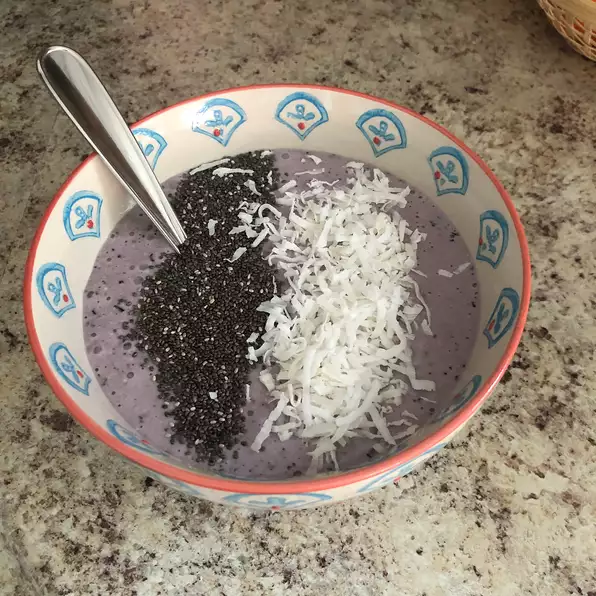

Overnight Oats Blueberry Smoothie Bowl

I combined overnight oats with blueberries, banana, and almond
vanilla milk and turned it into a yummy blueberry smoothie bowl!
Top with whatever seeds, nuts or berries you enjoy!
Ingredients
- 1 cup rolled oats
- 1 1//4 cups unsweetened vanilla-flavored almond milk, divided
- 1 frozen banana, chopped
- 1 cup blueberries
- 1 teaspoon vanilla extract
- 1 teaspoon maple syrup, or to taste
- 2 tablespoons flaked coconut
- 1 tablespoon fresh blueberries
- 1 teaspoon chia seeds
Steps
- Combine oats and 2/3 cup almond milk in a bowl; refrigerate
until oats have absorbed the liquid, 8 hours to overnight.
- Combine oats-almond milk mixture, remaining almond milk,
banana, 1 cup blueberries, vanilla extract, and maple syrup
in a blender; blend until smooth.
- Pour smoothie into 2 bowls and top with coconut, 1 tablespoon
blueberries, and chia seeds.